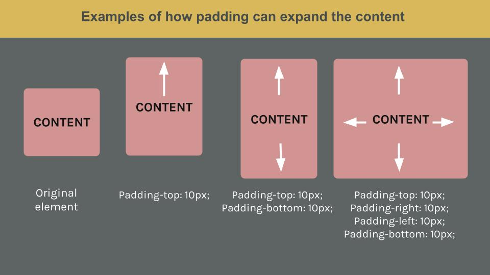

When laying out a page, the browser represents each element as a box with different areas, thus “the css box model”.
These areas determine the space surrounding each element and how that space interacts with other elements in your page.
Every HTML element has four areas: content, padding, border and margin. The image below illustrates the areas in the
css box model:
Let's have a look at each area of the model:
The values can be set by the padding-top, padding-right, padding-left and padding-bottom properties or by the shorthand padding property. When using the shorthand padding property you can specify one, two, three or four values.
Padding can be used to make an element grow or shrink. Here is an example of how padding affects the content's size:

A word of warning, without a background color and a border it is quite difficult to notice the padding in action. You just will see your piece of text moving up and down or from side to side, almost as if you were adjusting the margin instead.
A good way to think about these areas and how they interact with each other, is to imagine you are decorating a wall (your page) with photographs (your content). You could place a mat (padding) behind a photo, you can frame (border) another photo, and you can put them in different locations (margin) relating to each other and the wall. Here are a few examples:
The mat represents the padding. You can
choose to leave your padding at its starting
point, which is 0px like in the last photo.
The frame represents the border. You can
frame your picture in any way you like.
No frame is also an option.
The photo frames have the same
distance between them.
By changing the margins the frame
change position within the wall.
I hope this was useful!